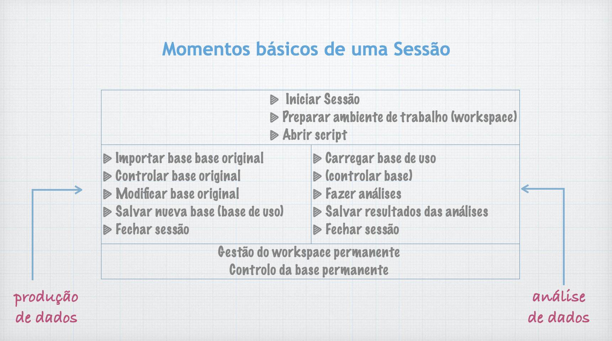
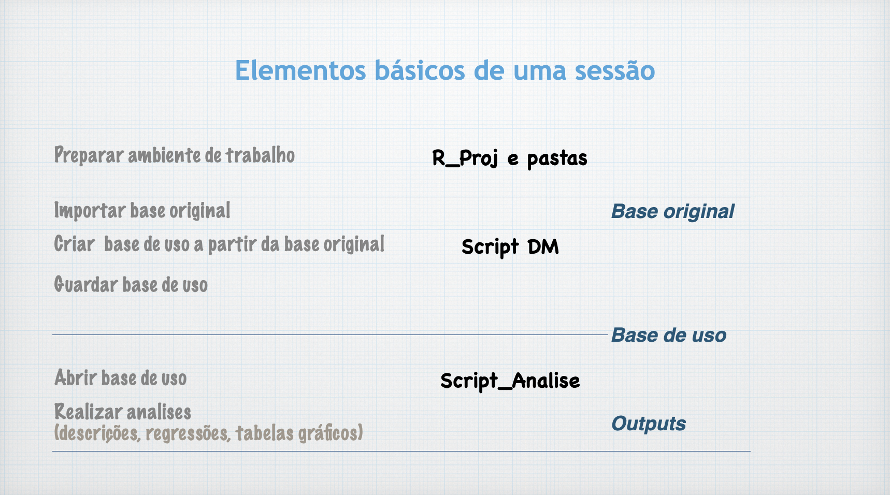

.RprojPreparação do ambiente de trabalho com a criação de um ficheiro .Rproj
- Antes de iniciar R.Studio: criar a pasta do projeto
- Iniciar sessão R.Studio (clique no ícono) e digitar:
New Project -> Existing Directory -> NomeDaPasta -> Create Project
Clicar no ficheiro
.Rproj
sessionInfo() options(digits=4)wdgetwd()wdsetwd ("/Users/Q/My_R/R_Project1") R utiliza / (forward slashes) para designar subdirectorios (diferente ao uso no Windows, ugual a Mac e Unix)
wdlist.files()ls ( ) # listar os objetos da sessão
ls(pat = "c") # listar objetos que contêm ‘c’ nos seus nomes
ls(pat= "^c") # listar objects que comecem com ‘c’
ls(pos=2) # Check the contents of the file that has been attached rm("var1" ) # remover objeto "var1"
rm(list =ls() ) # remover todos os objetos da sessão
rm(list=setdiff(ls(), "B")) # remover todo menos "B"
rm(list=setdiff(ls(), c("W", "X"))) # remover todo menos "W" e "X"install.packages ("PackageName")library (PackageName)
# Or: clicking packages on Window4/ Tab Packages
# Or via menu system: Packages>Load Packages data(aids) # carregar base ‘aids’ (pacote ‘(KMsurv)’detach ("package:name") #detach datasearch () # mostra pacotes abertos
library(help=KMsurv) # mostra info sobre pacote KMsurv
.libPaths() # indica a localização da 'library', the ‘library’ subdirectory of R_HOME.
library () # cria script com todos os pacotes instalados e na library (ou olhar pestana FILES)?getwd # information on the “getwd” function
??getwd # information on the “getwd” function
apropos ("norm") # to find all functions in R that contains the string norm type)File -> Open File -> (search script and open)Opções b: > duplo-click no script, na janela FILES
File -> New File -> R ScriptOpção b:
Na barra de ferramentas da janela SOURCE: > + -> R Script
Opção c:
> Ctrl + Schit + N (Mac)
File -> New File -> R Script -> Save/Save as/Opção b:
> usar o ícone da janela do script
_ Executar comandos no Script
> sublinhar comando ->Cmd+ENTER (Mac)
sublinhar comando ->
Ctrl+R(Windows)
load ("objecto_y")
load ("objectox_yx")
load (“Minhabase")
load ("WorkspaceProj1") load ("~/0R/AA") file.choose() save (y, file="object_y") # Guardar y como "object_y"
save (y, x, file="object_yx") # Guardar y and x
save (minhabase, file="Minhabase.RData") # Guardar dataframe
save.image(file="WorkspaceProj1") # Guardar workspacesave (AA, file= "~/0R/AA")
# AA= obeto R
# "~/0R/AA"= posição e nome do objeto salvadopdf("mygraph.pdf") # create the file
plot (x,) # execute the graphic
dev.off() # finish the process
# http://www.statmethods.net/interface/io.html# a) Criar o ficheiro
sink("meu_documento.txt")
# b) Especificar um título interno
print("The mean of var1 x is…")
# c) produzir os dados (o output será imprimido no .txt, não na CONSOLA)
mean (x)
plot (x)
# d) Finalizar o procedimento:
sink()b Usando sink() e cat()
# a) Criar o ficheiro
sink("meu_documento.txt")
# b) Concatenar
cat("A média de varX é...", mean(varX), "\n")
# c) Finalizar o procedimento:
sink()Bases Excel :
> Environment -> Import Dataset -> From Excel
Bases SPSS > Environment -> Import Dataset -> From SPSS
Bases STATA
Environment -> Import Dataset -> From STATA
library (openxlsx)
write.xlsx(Df, "Df.xlsx")write.table(Df, file="Df.csv",sep=",",row.names=F)library(foreign)
write.foreign(mydata, "c:/mydata.txt", "c:/mydata.sps", package="SPSS")library(foreign)
write.dta(Df, "Df.dta") q() # fechar sessão